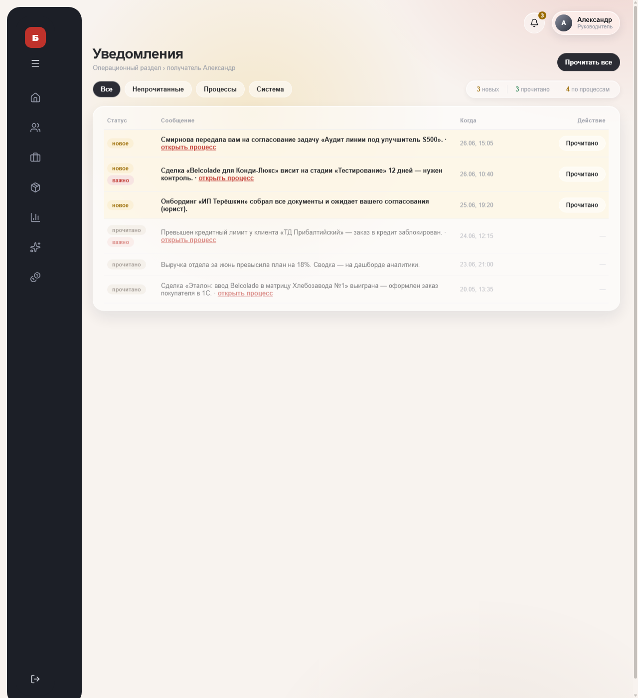

feat/notifications-ochre · Closes #430 · design §5.1 — "new" and "important" separated by color.
Before
Unread items were marked new in red — the same color as urgent. The eye confused novelty with importance.
After
Everything new is marked the same way, new in ochre: an ochre badge, bold title, a light ochre row background. Read items are gray, no markers.
The bell counter and the "N new" strip are also ochre now (used to be red).
Before
There was no importance dimension — critical notifications couldn't be highlighted.
After
Important notifications get a red chip important on top of the ochre "new". Red now means importance only, not novelty.
Demo: "Deal has been stuck for 12 days" — new important; "Credit limit exceeded" — read, but still important.
Before
All / New / Read / By task.
After
All / Unread / Processes / System. "System" is notifications not tied to a process (limits, summaries, approvals, onboarding).
The bell and the section use the same labels (single source of truth).
